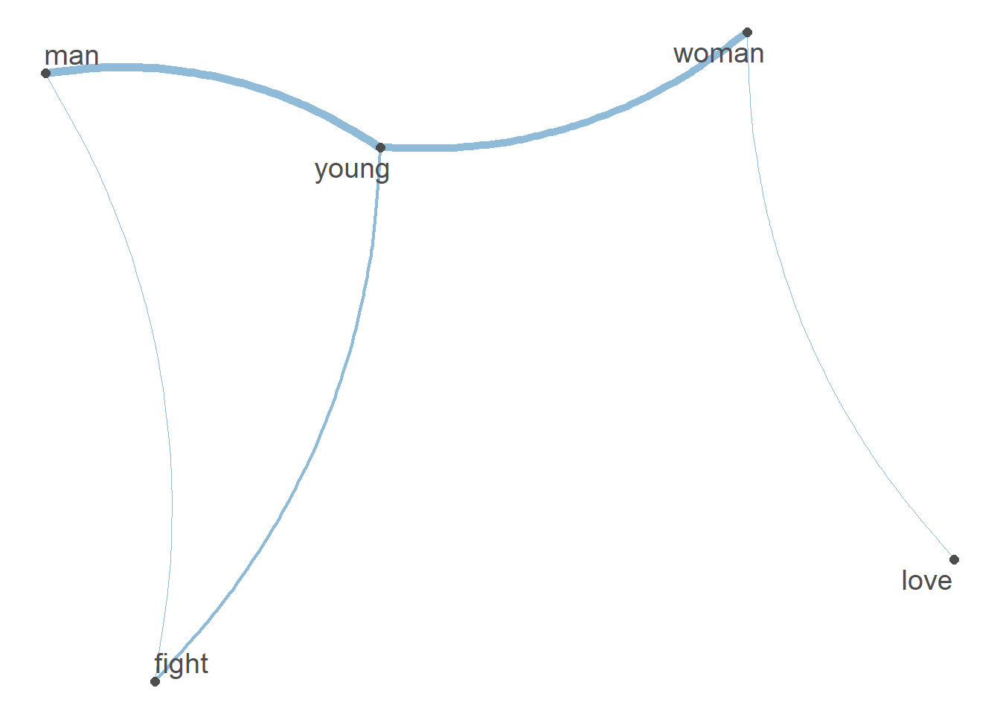
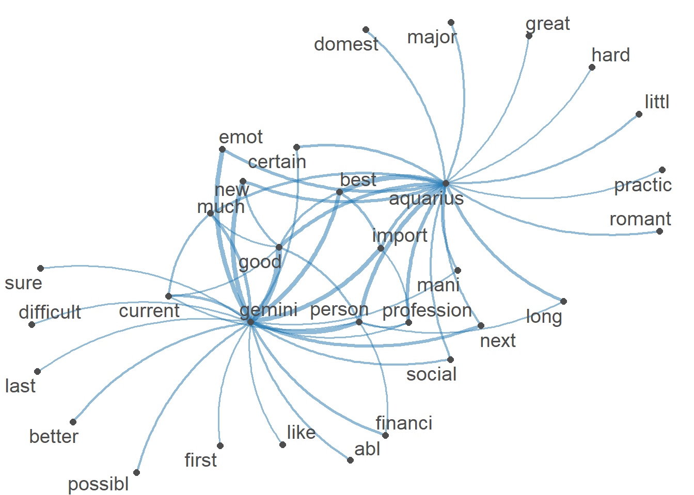

#install.packages("tidyverse)
#install.packages("RCurl")
#install.packages("quanteda")
#install.packages("quanteda.textstats")
#install.packages("quanteda.textplots")
#install.packages("udpipe")
library("tidyverse")
library("RCurl")
library("quanteda")
library("quanteda.textstats")
library("quanteda.textplots")
library("udpipe")Sitzung 2: Co-Occurrence Analysen
1. Pakete laden und Daten einlesen
Zunächst installieren alle Pakete, die wir für diese Sitzung brauchten (z.B. tidyverse). Ihr braucht install.packages() nur, wenn ihr die Pakete im Methodencafe noch nicht installiert hattet.
Neu hinzugekommen seit dem Methodencafe ist das rsyntax-Paket, das ihr neu installieren müsstest:
install.packages("rsyntax")
library("rsyntax")Nun lesen wir die Daten wieder ein und führen die bereits erlernten Preprocessing-Schritte, inkl. der Transformation in eine Document-Feature-Matrix, aus:
# Daten laden
url <- getURL("https://raw.githubusercontent.com/valeriehase/textasdata-ms/main/data/data_tvseries.csv")
data <- read.csv2(text = url)
# Preprocessing
tokens <- tokens(data$Description,
what = "word", #Tokenisierung, hier zu Wörtern als Analyseeinheit
remove_punct = TRUE, #Entfernung von Satzzeichen
remove_numbers = TRUE) %>% #Entfernung von Zahlen
# Kleinschreibung
tokens_tolower() %>%
# Entfernung von Stoppwörtern
tokens_remove(stopwords("english")) %>%
# Stemming
tokens_wordstem()
# Text-as-Data Repräsentation als Document-Feature-Matrix
dfm <- tokens %>%
dfm() %>%
# Relative pruning
dfm_trim( min_docfreq = 0.005,
max_docfreq = 0.99,
docfreq_type = "prop",
verbose = TRUE) Jetzt sind wir bereit für die ersten Co-Occurrence-Analysen!
2. Co-Occurrence Analysen
2.1 N-grams
Zunächst schauen wir uns als Beispiel für ngrams bigrams, d.h. Abfolgen zweier Wörter, an:
tokens %>%
# Umwandlung in bigrams
tokens_ngrams(n = 2) %>%
# Ausgabe für erstes Dokument
head(1)Tokens consisting of 1 document.
text1 :
[1] "nine_nobl" "nobl_famili" "famili_fight"
[4] "fight_control" "control_land" "land_westero"
[7] "westero_ancient" "ancient_enemi" "enemi_return"
[10] "return_dormant" "dormant_millennia"Aus Sitzung 1 kennen wir ja bereits den Befehl topfeatures(), um uns die häufigsten Features ausgeben zu lassen. Nun lassen wir uns nicht die häufigsten unigrams (einzelne Wörter), sondern die häufigsten bigrams (Abfolge von zwei Wörtern) ausgeben.
tokens %>%
# Umwandlung in bigrams
tokens_ngrams(n = 2) %>%
# Umwandlung in dfm für topfeatures-Befehl
dfm() %>%
# Ausgabe der häufigsten Features
topfeatures(10) %>%
# Umwandlung in einen "schöneren" Dataframe mit der Spalte "Häufigkeit"
as.data.frame() %>%
rename("Häufigkeit" = '.') Häufigkeit
new_york 39
best_friend 25
high_school 22
los_angel 22
york_citi 19
person_profession 13
serial_killer 10
antholog_seri 10
seri_follow 10
young_boy 9Wir sehen, dass unter den häufigsten bigrams einige Features sind, die in Kombination miteinander eine andere Bedeutung haben als als einzelne unigrams. Dazu gehören z.B. Orte (z.B. New York) oder Ausdrücke (z. B. serial killer).
In einem weiteren Schritt kann es manchmal sinnvoll sein, Ngrams für die weitere Analyse zu einem Feature zusammenzufassen (dieser Schritt wäre dann Teil des Preprocessings). Beispielsweise wollen wir, dass United immer mit States als ein Feature United States verstanden wird, sobald diese beiden Features in dieser Abfolge genutzt werden (statt diese in einzelne Features zu splitten).
Dieses Zusammenfassen (compounding) lässt sich mit der tokens_compound()-Funktion aus dem quanteda.textstats-Paket umsetzen.
Die Funktion verbindet unigrams mit einem Unterstrich zu einem ngram, das als ein einziges Feature weiter analysiert wird. Dieser Schritt wird zwischen dem tokens-Befehl und dem dfm-Befehle (d.h. der Tokenisierung und der Erstellung einer Document-Feature-Matrix) eingefügt.
# Definition häufiger Ngrams auf Basis der vorherigen Ausgabe
ngrams <- c("los angel","new york citi", "serial killer", "high school", "best friend")
# Text-as-Data Repräsentation als Document-Feature-Matrix
dfm <- tokens %>%
# Zusätzlicher Schritt, um Ngrams als einzelnes Feature einzulesen
tokens_compound(pattern = phrase(ngrams)) %>%
# reguläre DFM, inkl. Relative Pruning
dfm() %>%
dfm_trim( min_docfreq = 0.005,
max_docfreq = 0.99,
docfreq_type = "prop",
verbose = TRUE)
# Beispiel: Wie wird das Feature "Los Angeles" eingelesen?
dfm %>%
# Umwandlung zu Data-Frame
convert(to = "data.frame") %>%
# Reduktion auf Doc ID und Features, die mit "los" beginnen
select(doc_id, starts_with("los")) %>%
# Ausgabe ausgewählter Serien (Zeile 125 bis 130)
slice(125:130) doc_id lost los_angel
1 text125 0 0
2 text126 0 1
3 text127 0 0
4 text128 0 0
5 text129 0 1
6 text130 0 02.2 Keywords-in-Context (KWIC)
Als eher qualitativer Einblick bietet sich die Analyse von Konkordanzen, d.h. der Analyse von Schlüsselwörtern und ihres Kontexts, im Text an.
Die kwic()Funktion aus dem quanteda-Paket identifiziert hierzu Schlüsselwörter und Wörter vor bzw. nach diesen. Wir schauen uns also Wörter an, die um ein sogenanntes Window von z.B. einem oder mehr Wörtern vor oder nach dem Schlüsselwort vorkommen.
Mit folgendem Code können wir beispielsweise herausfinden, in welchem Kontext das Wort hero vorkommt. In der Ausgabe werden jeweils das Wort vor und nach dem Wort hero angezeigt. Um die Bedeutung dieser Wörter besser zu verstehen, nutzen wir dabei die “unbereinigte” Description-Variable aus dem Objekt data.
data$Description %>%
# Keywords-in-Context mit Window von 1 Wort vor und nach Schlüsselwort
kwic(pattern = "hero",
window = 1) %>%
# Ausgabe der ersten Zeilen
head()Keyword-in-context with 5 matches.
[text124, 7] a | hero | that
[text140, 38] Rebel | hero | .
[text336, 8] prestigious | hero | academy
[text336, 19] a | hero | ,
[text756, 8] a | hero | of 2.3 Collocations
Ein weiterer, eher quantitativer Ansatz sind Collocations. Collocations bezeichnen Features, die häufig (und damit vermutlich nicht-zufällig) nacheinander auftreten, was auf eine gemeinsame semantische Bedeutung hindeutet (z.B. United und States).
Um herauszufinden, welche Features vorkommen, können wir die Funktion textstat_collocations() aus dem quanteda.textstats-Paket verwenden.
tokens %>%
# Identifikation von Collocations, die mind. 10 Mal vorkommen
textstat_collocations(min_count = 10) %>%
# Sortierung nach lambda: Je grösser,
# desto wahrscheinlicher handelt es sich um nicht-zufällige Collocations
arrange(-lambda) %>%
# Ausgabe der häufigsten 10 Collocation
head(10) collocation count count_nested length lambda z
8 los angel 22 0 2 11.992530 7.856166
9 new york 39 0 2 9.635186 6.744491
5 serial killer 10 0 2 8.665918 11.849150
4 person profession 13 0 2 7.817347 12.191558
7 antholog seri 10 0 2 7.632806 8.612064
1 high school 22 0 2 7.041380 16.490961
3 best friend 25 0 2 7.006030 15.088077
2 york citi 19 0 2 5.810906 16.071342
6 seri follow 10 0 2 4.323497 11.362725Das kennen wir doch schon - nämlich aus Abschnitt 2.1 zu ngrams.
2.4 Semantische Netzwerke
Als stärker quantifizierende Analyse bietet sich die Visualisierung von Co-Occurrenzen mittels semantischer Netzwerke an. Diese visualisieren, welche Features häufig in einem gemeinsamen Kontext (z.B. in direkter Abfolge, innerhalb eines Textes) vorkommen.
Hierfür müssen wir zunächst die DFM in eine Feature-Co-Occurrence Matrix (FCM) umwandeln. Das machen wir mit der Funktion fcm() aus dem quanteda-Paket.
Uns interessiert zunächst, wie häufig Features innerhalb eines Textes vorkommen, weshalb wir das context-Argument nutzen und auf document setzen.
tokens %>%
# Umwandlung in eine Feature-Co-Occurrence-Matrix
fcm(context = "document") %>%
# Ausgabe der ersten Zeilen
head()Feature co-occurrence matrix of: 6 by 4,246 features.
features
features nine nobl famili fight control land westero ancient enemi return
nine 0 1 1 1 1 1 1 1 1 1
nobl 0 0 1 1 1 1 1 1 1 1
famili 0 0 8 6 2 3 1 1 4 6
fight 0 0 0 1 2 2 1 2 2 2
control 0 0 0 0 0 1 1 1 1 1
land 0 0 0 0 0 0 1 1 1 1
[ reached max_nfeat ... 4,236 more features ]Wir sehen:
- Die FCM besteht aus 4,246 Features (da wir nur wenig Preprocessing genutzt haben, sind dies noch recht viele Features).
- Die Zellen der FCM illustrieren, wie häufig welche Wörter in der Beschreibung einer Serie mittels
Descriptiongemeinsam vorkommen.
Wir können jetzt spezifische Features auswählen, die uns interessieren. Das machen wir mit der Funktion fcm_select() aus dem quanteda-Paket.
Zudem könnten wir über das window-Argument noch spezifizieren, dass uns die Co-Occurrence von Features nur innerhalb eines Windows von z. B. acht Features interessiert. Ein Argument hierfür wäre, dass Feature, die nah aufeinander folgen, auch stärker eine inhaltlich geteilte Bedeutung haben als solche, die “nur” gleichzeitig in einem Dokument vorkommen. Zudem setzen wir das selection-Argument auf keep, um die FCM nur auf die angegebenen Features zu reduzieren.
Beispielsweise wollen wir uns anschauen, ob Männer (man) und Frauen (woman) in Serienbeschreibungen stereotypisiert, z. B. im Hinblick auf Geschlechterrollen, dargestellt werden.
Dafür schauen wir, welche Wörter (z.B. fight vs. romance) häufiger in Verbindung mit Männern bzw. Frauen genannt werden
fcm <- tokens %>%
# Erstellung einer FCM mit einem Window von 8
fcm(window = 8) %>%
# Reduktion auf ausgewähler Features
fcm_select(pattern = c("fight", "man",
"love", "young", "woman"),
selection = "keep")Wir visualisieren die Ergebnisse als semantisches Netzwerk mit der textplot_network()Funktion aus dem quanteda.textplots()-Paket.
Wenn Features im selben Kontext (hier 8 Wörter) vorkommen, werden sie mit einer Linie verbunden. Umso dicker die Linie, desto öfter kommen Features gemeinsam vor.
Dabei können wir sehen, dass Männer wie Frauen häufig als “jung” beschrieben werden - Männer aber häufiger mit “Kämpfen” und Frauen mit “Liebe” assoziiert werden:
# Plot des semantischen Netzwerks
textplot_network(fcm)
3. Part-of-Speech Tagging
Part-of-Speech Tagging (PoS Tagging) bezeichnet die Zuordnung von Features zu Wortarten (z.B. ob es sich bei einem Feature um ein Verb oder ein Substantiv handelt).
Für das PoS Tagging nutzen wir das Paket udpipe. Dafür müssen wir die Daten erst für die Analyse vorbereiten (den Text in Description in ein tibble-Format bringen, eine Variable doc_id erstellen, welche alle Texte numerisch identifiziert, und die relevanten Daten, die Serienbeschreibungen, in der Variable Text abspeichern).
Dafür nutzen wir den “ursprünglichen”, unbereinigten Datensatz, da die Part-of-Speech Tagger nicht nur das Feature selbst, sondern auch Kontext wie z.B. Satzzeichen nutzen, um zu verstehen, welche Funktion Wörter in Sätzen haben.
data_pos_tagged <- data$Description %>%
# Format für das udpipe Paket anpassen
as_tibble() %>%
mutate(doc_id = paste0("text", 1:n())) %>%
rename(text = value) %>%
# Part-of-speech tagging
udpipe("english") %>%
# Wir reduzieren die Ausgabe auf relevante Variablen (z.B. Text-ID, Tag)
select(doc_id, sentence_id, token_id, token, lemma, upos, head_token_id)
# Wir schauen uns die Ausgabe an
head(data_pos_tagged) doc_id sentence_id token_id token lemma upos head_token_id
1 text1 1 1 Nine nine PROPN 3
2 text1 1 2 noble noble ADJ 3
3 text1 1 3 families family NOUN 4
4 text1 1 4 fight fight VERB 0
5 text1 1 5 for for ADP 6
6 text1 1 6 control control NOUN 4Wie kann man PoS Tagging jetzt für wissenschaftliche Analysen nutzen?
Wir können auf Basis der PoS Tags z. B. analysieren, mit welchen Adjektiven das Wort family beschrieben wird.
Dafür…
- Filtern wir mit
filter()den Datensatz nach Substantiven mit dem Lemma Family - Suchen mit
inner_join()Sätze mit diesem Feature (gleichedoc_id, gleichesentence_iddes Features) im Datensatz - Reduzieren wir mit
filter()den Datensatz auf Adjektive, die zum Feature Family gehören (identifiziert viahead_token) - Und verschönern mit
rename(),select()undhead()die Ausgabe so, dass wir nur ausgewählte Ergebnisse erhalten.
Und das geht so:
data_pos_tagged %>%
# Wir filtern den Datensatz nach dem Substantiv "Family"
filter(upos == "NOUN" & lemma == "family") %>%
# Für alle gefundenen Fälle suchen wir die zugehörigen Sätze im "vollen" Datensatz
# Das Matching geschieht via doc_id (ID des Dokuments) und sentence_ic (ID des Satzes im Dokument)
inner_join(data_pos_tagged, by = c("doc_id", "sentence_id")) %>%
# Wir behalten mit filter nur Adjektive, die sich auf Familie beziehen
# Nämlich solche, die bei "head_token" die "token_id" des Features "Family" haben
filter(upos.y == "ADJ" & head_token_id.y == token_id.x) %>%
# Wir benennen manche Variablen um, damit das Ganze besser verständlich ist
rename(token_id = token_id.y,
token = token.y) %>%
# Wir wählen nur relevante Variablen aus
select(doc_id, sentence_id, token_id, token) %>%
# erste Zeilen ausgeben
head() doc_id sentence_id token_id token
1 text1 1 2 noble
2 text48 1 9 dysfunctional
3 text61 2 6 spoiled
4 text61 2 8 dysfunctional
5 text69 1 7 loyal
6 text98 1 8 British4. Dependency Parsing
Als letzte Analysemöglichkeit schauen wir uns Dependency Parsing an. Dependency Parsing beschreibt die Abhängigkeit von Features innerhalb von Sätzen (z.B. welche Adjektive sich auf welche Substantive beziehen, etc.).
Für Dependency Parsing können wir wieder die Funktion udpipe() aus dem Paket udpipe nutzen. Wir bereiten die Daten ähnlich vor wie für das PoS Tagging. Der einzige Unterschied ist, dass wir uns nun mit select() zusätzlich dep_rel als Art der syntaktischen Beziehung, die das jeweilige Feature zu head_token hat, ausgeben lassen.
data$Description %>%
# Format für das udpipe Paket anpassen
as_tibble() %>%
mutate(doc_id = paste0("text", 1:n())) %>%
rename(text = value) %>%
# Der Einfachheit halber machen wir diese Analyse nur für einen Text
slice(1) %>%
# dependency parsing
udpipe("english") %>%
# relevanten Variablen auswählen
select(doc_id, sentence_id, token_id, token, head_token_id, dep_rel) %>%
# erste Zeilen ausgeben
head(5) doc_id sentence_id token_id token head_token_id dep_rel
1 text1 1 1 Nine 3 compound
2 text1 1 2 noble 3 amod
3 text1 1 3 families 4 nsubj
4 text1 1 4 fight 0 root
5 text1 1 5 for 6 caseWer sich nun fragt, was diese Abkürzungen bedeuten, kann hier mehr Infos erhalten.
Zusätzlich lassen sich solche Dependency Relations auch visualisieren, etwa via dem rsyntax-Paket. Probieren wir dies für einen einfacheren, kürzeren Satz:
# Beispielsatz in udpipe
udpipe("My only goal in life is to understand dependency parsing", "english") %>%
# Umwandlung in Format für rsyntax-Paket
as_tokenindex() %>%
# Visualisierung
plot_tree(., token, lemma, upos)Aufgabe 1 üìå
Die folgende Übung fasst alles zusammen, was wir bisher gelernt haben: Preprocessing und Co-Occurrence Analysen.
Bitte arbeitet für die Übung mit dem Horoskop-Datensatz (Download der CSV-Datei entweder via der Webseite oder Einlesen via dieser URL)
Aufgabe 1.1
Lest den Datensatz ein und verschafft euch einen Überblick über die Daten. Welche Variablen sind dort vorhanden?
Aufgabe 1.2
Bereitet den Datensatz durch Preprocessing und das Umwandeln in eine DFM für die Analyse vor. Hinterfragt kritisch, welche Bereinigung- und Normalisierungsschritte ihr tatsächlich braucht.
Aufgabe 1.3
Schaut euch als erste Analyse an, welcher Ausdrück häufiger vorkommt: “secret fear” oder “in love”?
Aufgabe 1.4
Jetzt wollen wir wissen, bei welchem Sternzeichen es am mysteriösesten wird: Bei welchem Sternzeichen fällt am häufigsten das Stichwort “secret”?
Aufgabe 1.5
Visualisiert auf Basis eines semantischen Netzwerk, mit welchen Adjektiven die Sternzeichen “Aquarius” (Wassermann) vs. “Gemini” (Zwilling) häufig in den Horoskopen assoziiert werden.
Das Netzwerk könnte etwa so aussehen:
